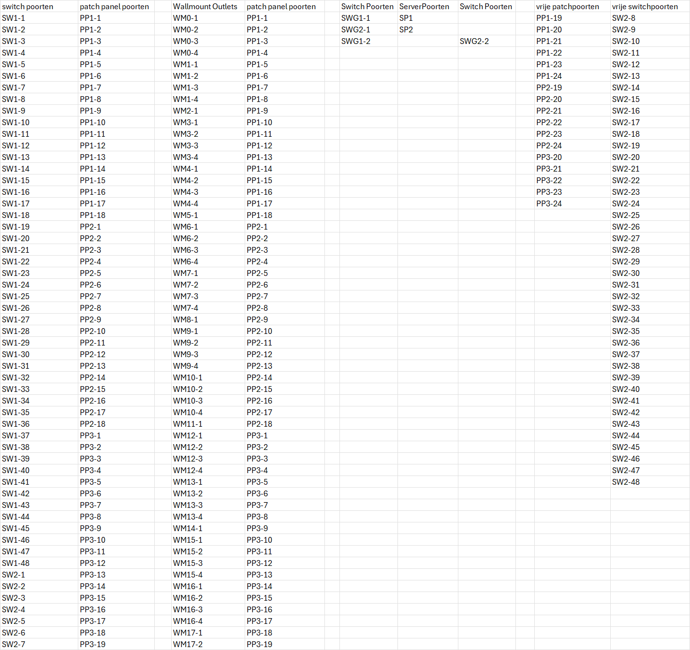

detailpagina #project
dit is een schoolproject dat ik deed in mijn eerste jaar graduaat in 2025
het project gaat over het plannen van een netwerk in een bedrijf.
De Volgende instructies werden meegegeven:
• Het kantoor bestaat uit een gelijkvloers en een eerste verdieping.
• De hoogte tussen twee verdiepingen is 4 meter
• Er werken 24 mensen die elk een eigen bureau / werkplek hebben
• Ze hebben voor hun werkzaamheden 2 on prem servers nodig waar enkel gemachtigde mensen fysiek toegang tot mogen hebben.
• Deze firma zal over 20 desktops en 10 laptops beschikken.
• Zes van deze laptops zijn flexi laptops die kunnen uitgeleend worden.
• Alle laptops moeten draadloos kunnen werken.
• Op elke werkplek wordt er een VoIP telefoon (= netwerktelefoon) voorzien
• De werkplekken zijn verdeeld over 6 kantoren binnen het gebouw
• In elk kantoor staat ook een MFP
• Alle end-devices in het netwerk zijn single homed
hier vind je de bouwplan en patchplan dat ik voor deze taak moest maken.


samenvatting
bij het maken van de opdracht hadden we eerst de taken verdeeld de volgende dag
daarna zijn we rustig aan het werk gegaan met aleen een paar problemen op de weg.
deze hebben we kunnen oplossen door dit te vragen aan de docent Vaya voor hulp.
zelfs na de taak in te leveren zijn ik en mijn teamgenoot niet erin geslaagd geweest om een voldoende te halen maar hierdoor krijgen we een herkansing waardoor ik deze pagina ga updaten de moment we dit af hebben voor 23/12/2025